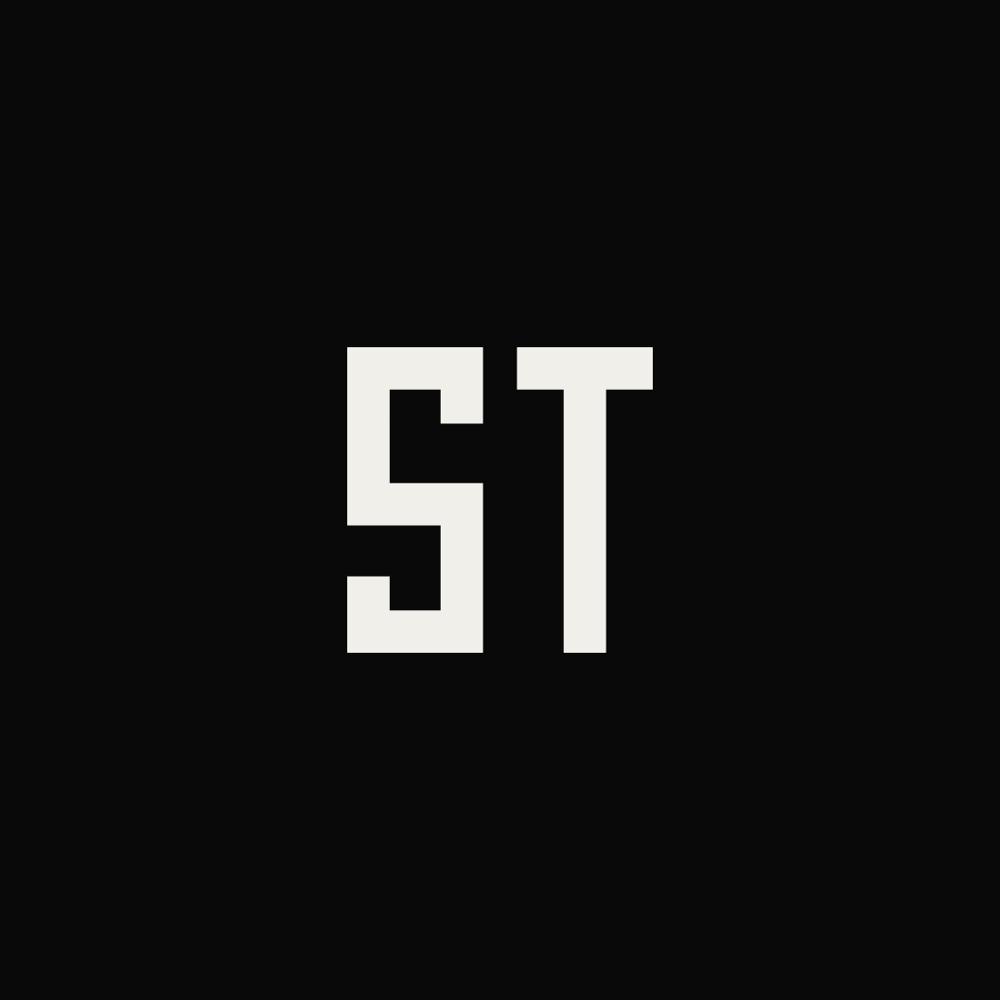
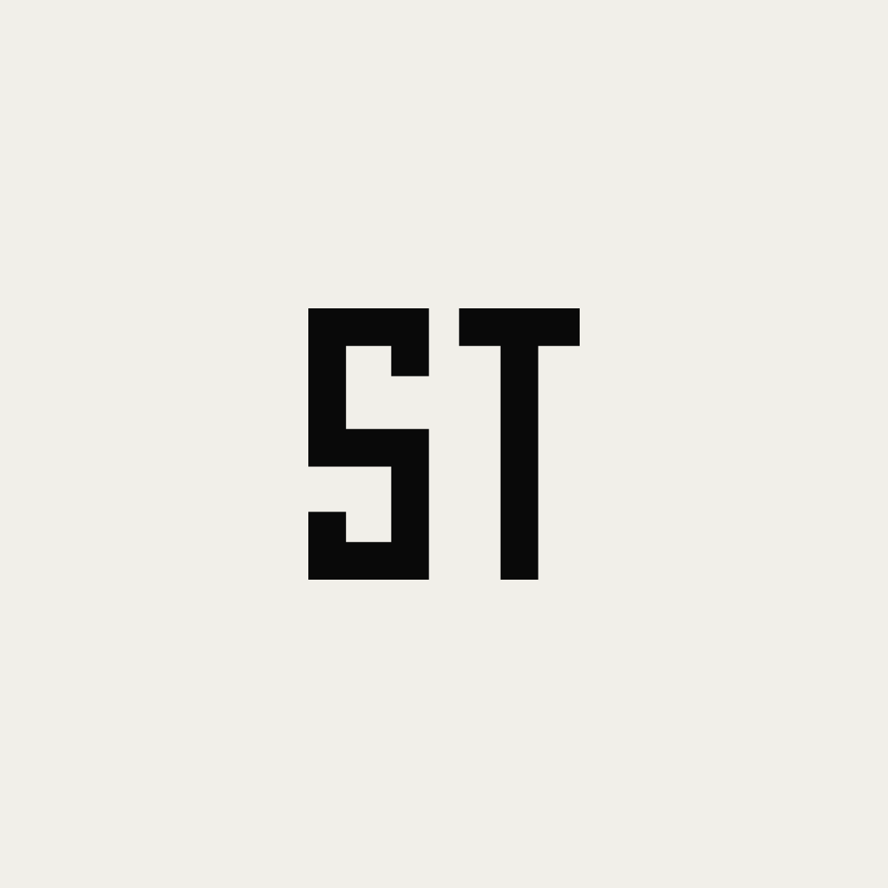
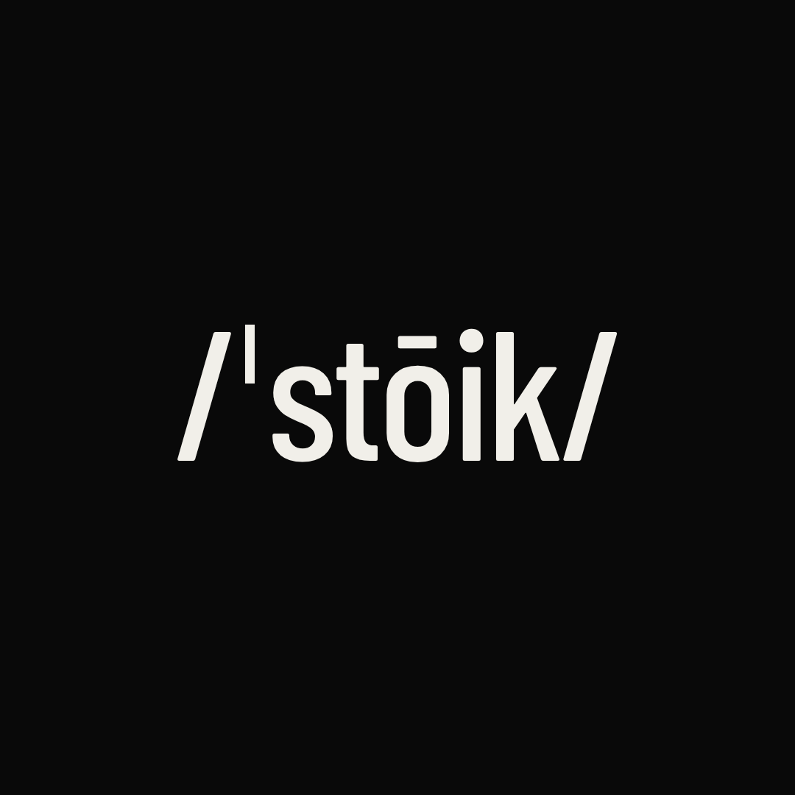
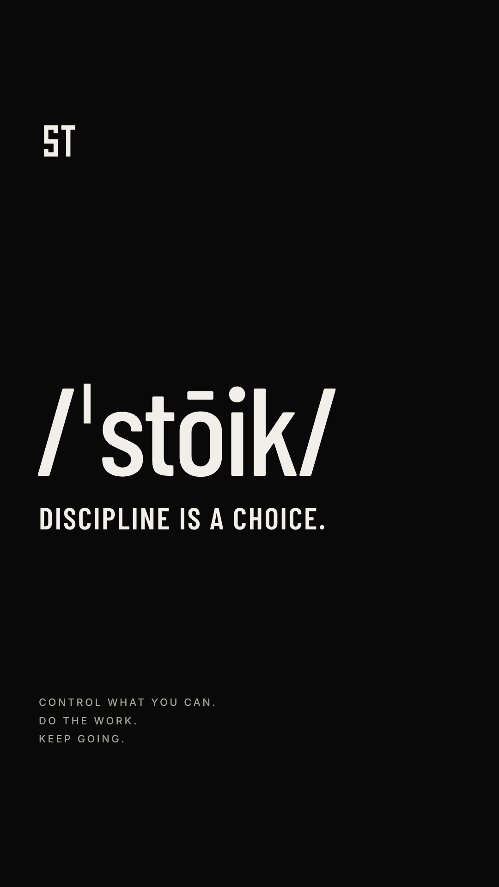
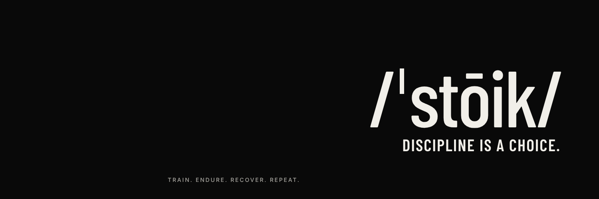
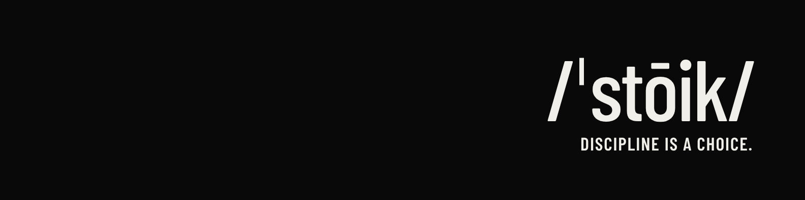
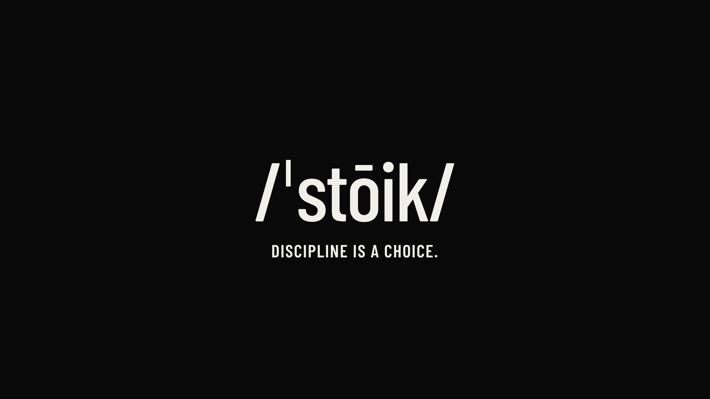
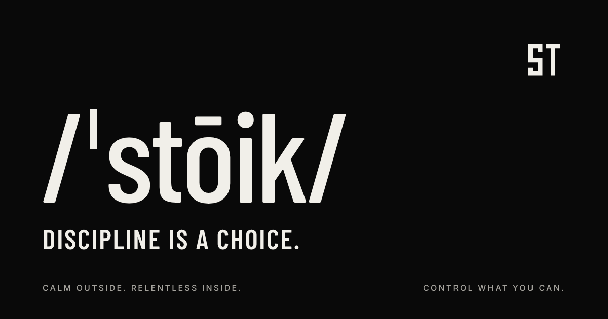

Brand identity — v1
A uniform
for self-mastery.
Quiet. Precise. Disciplined. Intelligent. Physical. Modern. Never loud, aggressive, macho or influencer-ish. Calm outside. Relentless inside.
Marks
Colour
The brand lives in black, bone and grey. Oxide is reserved for rare moments. Tap a swatch to copy its hex.
Type
Two typefaces only.
Display — Barlow Condensed
Discipline is a choice.
Body — Inter
Control what you can. Accept what you can't. Do the work.
Voice
Short. Intentional. Say it in three words, not thirty.
Not
Push yourself beyond your limits and become the best version of yourself.
But
Keep going.
Not
Don't let your circumstances determine your future.
But
Control what you can.
Not
Consistency is the key to achieving your goals.
But
Stay the course.
Signature phrases
- Discipline is a choice.
- Do it anyway.
- Built, not rushed.
- Stay the course.
- Control what you can.
- Become harder to break.
- No zero days.
- Keep your standard.
Social feed mix
Assets
Ready for every profile. Profile pictures keep the mark inside the circle crop.


Profile — monogram 1080 × 1080 · Instagram, TikTok, Threads, YouTube

Profile — monogram, light 1080 × 1080

Profile — wordmark 1080 × 1080

Story / wallpaper 1080 × 1920

X header 1500 × 500

LinkedIn banner 1584 × 396

YouTube banner 2560 × 1440 · text inside the safe area

Link preview 1200 × 630 Monogram SVG Bone, for dark backgrounds Monogram SVG Obsidian, for light backgrounds

Suggested bio
/ˈstōik/ — Discipline is a choice.
Calm outside. Relentless inside.
Training journal ↓